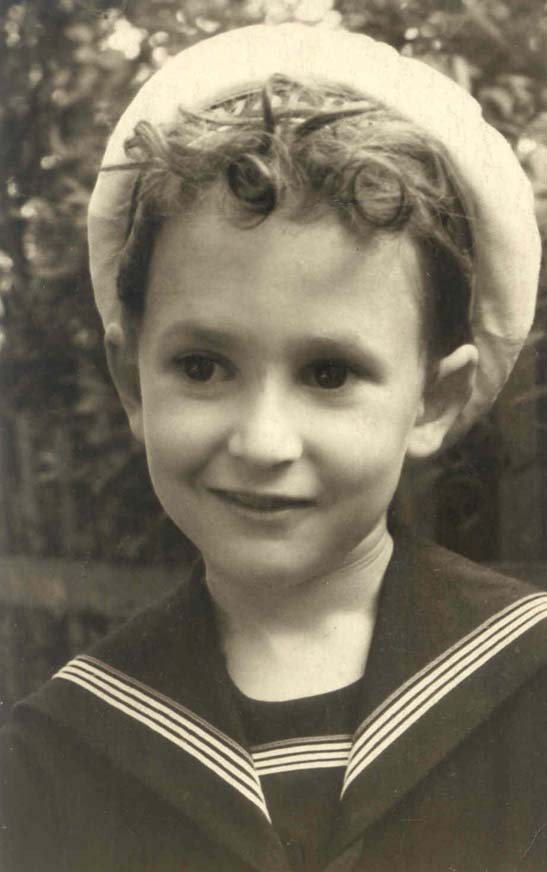

Родился 28 августа 1950 года в Москве.
Родители:
отец - Блехман Арон Борисович,
мать - Блехман (Цымринг) Людмила Давидовна,
Дважды был женат.
Первая жена - Татьяна Александровна Лескова, которая в 1979 году родила ему сына Илью Лескова (В настоящее время живет в США).
Вторая жена - Наталия Васильевна Б а с к а к о в а, родила ему в 1992 году дочь Юлию и в 1994 году сына Павла.
Живет в Москве.